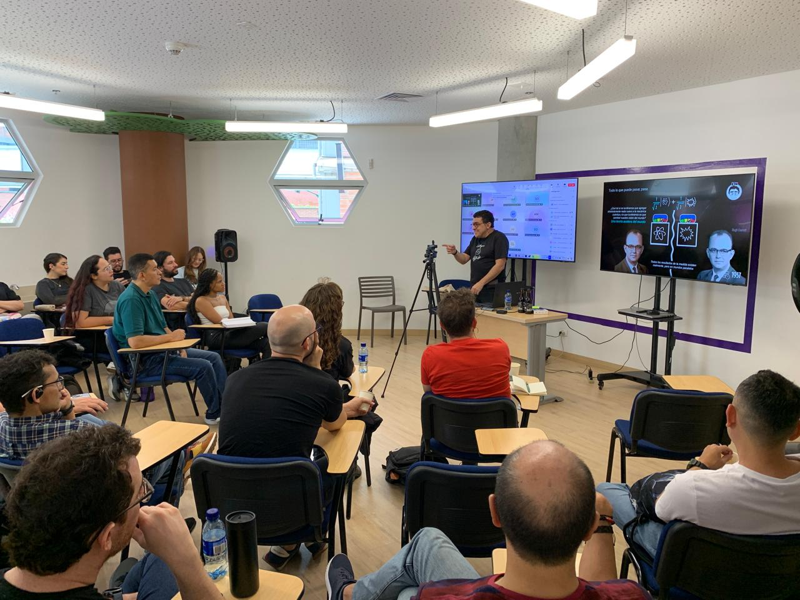
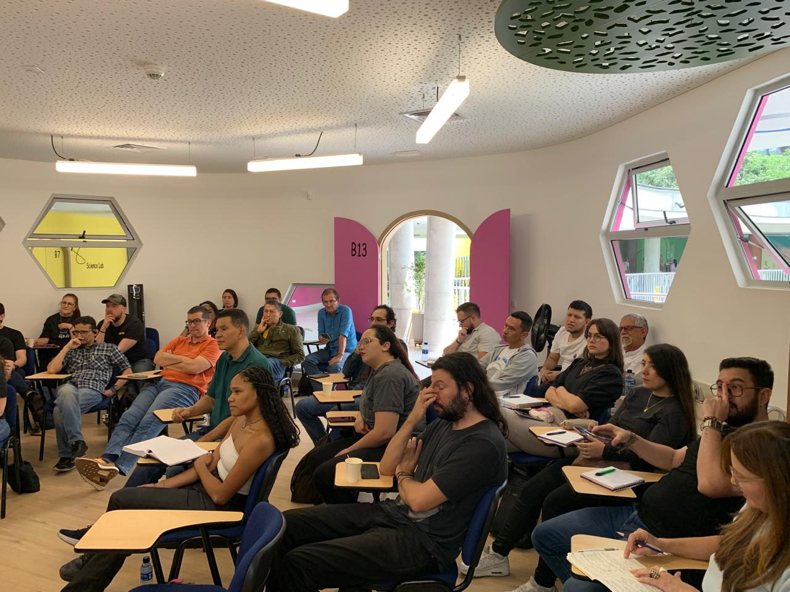

¿De qué va este curso?
Desde que nacimos en el universo ha sido un lugar violento y hostil. O bueno, al menos eso es lo que nos parece a los humanos que andamos por el mundo asustándonos con impactos de asteroides y explosiones de estrellas. ¡Deberíamos madurar!
Este es un curso para aproximarnos al universo en su faceta más corriente, es decir, a través de las catástrofes: estrellas devoradas por agujeros negros, protoplanetas que chocan como condición inicial para que se cuezan planetas más grandes, sistemas planetarios desbaratados por el paso de un agujero negro al garete, estrellas que chocan contra otras estrellas o que se devoran mutuamente, agujeros negros microscópicos que atraviesan como agujas hipodérmicas a planetas y estrellas por igual, planetas consumidos por el plasma calcinante de sus estrellas envejecidas, estrellas que se hacen añicos por la aniquilación de antimateria (¡así como lo oyen!) y otras que desaparecen sin dejar rastros al ser devoradas por su propio núcleo oscuro.
Sé que todo suena bastante raro, pero hay que acostumbrarse. Es el Universo en el que nos tocó vivir. En lugar de andar asustándonos, usemos estos curiosos fenómenos para aprender de astrofísica.
¿Puedes mencionar algunos temas?
La astrofísica es una ciencia con muchos perendengues, pero aquí no hay tiempo para profundizar en todo. Abarcaremos algunos conceptos importantes que nos permitirán entender las catástrofes más espectaculares del cosmos. Aquí les van unos títulos que pueden servir de abrebocas para lo que veremos en el curso:
Mil maneras de morir siendo una estrella.
No es divertido estar cerca de una estrella que muere.
Agujeros negros vagabundos ¡sálvense quien pueda!
Pinchados por un agujero negro primordial.
La Tierra contra Marte ¿quién gana?
Veo estrellas que chocaron.
¿Susto o emoción? ¡Nada de ñervios que esto es con el Dr. Z!
¿Cómo lo vamos a hacer?
¡Ojalá tuviéramos tiempo! Vamos a intentar hablar en 4 sesiones (más sería abusar de su goma y paciencia) de las catástrofes cósmicas más extrañas que hemos descubierto y estamos estudiando en el Universo.
Las sesiones de clase se realizarán presencialmente en las instalaciones del Colegio La Enseñanza en la ciudad de Medellín (Colombia), ubicado en la Cra. 43 No. 9 Sur 195, El Poblado. Transmitiremos en vivo las sesiones por Zoom para quienes no puedan atender las clases presenciales pero puedan seguirlas de forma sincrónica desde cualquier lugar del mundo. Estas clases serán también grabadas en video en caso de que quieran repetirlas después o en la comodidad del desierto de Gobi a una hora más decente.


¿Sabes por qué es más chévere asistir presencialmente o conectarse a las sesiones en vivo? ¡Por las preguntas y los comentarios que las personas que se inscriben hacen! (además, soy más charrito en persona, je, je). Si crees que tus preguntas pueden ser tontas, te aseguro que lo que sería una tontería sería inscribirse y no poder preguntar nada.
Todo el material del curso, presentaciones, lecturas y videos serán compartidos oportunamente con todas las personas del curso en la plataforma Google Classroom (¡necesitas una cuenta de Google para acceder a ella! ¡consíguela ya!).
¿Me dan algo al final?
¡Pero claro que por supuesto que sí! Al terminar el curso recibirás un certificado de participación ¡ni más faltaba!. Pero debes hacer algo primero.
Por cada sesión grabada o publicada te pasaremos un formulario para que llenes cuando hayas visto la sesión. En el formulario, además de contarnos si te pareció clara la explicación, o si quieres sugerirnos algo, incluiremos también unas 5 preguntas sobre el tema de la sesión para que pongas a prueba lo que aprendiste. No es necesario acertar en las preguntas, solo presentarlas. Cuando completes los 4 formularios ¡podrás avisarnos y te enviaremos tu certificado!
¿De qué no me puedo olvidar?
Estos son los datos que no puedes olvidar sobre el curso:
- Este curso es para aprender de astrofísica a través de catástrofes (¡las peores!)
- El curso tiene 4 sesiones de 2 horas cada una.
- Las sesiones se realizan los miércoles de 6:30 pm a 8:30 pm.
- Todas las personas están invitadas a asistir presencialmente a las clases.
- Nos encontramos en el Colegio La Enseñanza en Medellín (Colombia).
- La dirección del colegio es: Cra. 43 No. 9 Sur 195
- Puedes ver las clases en vivo a través de la plataforma Zoom.
- Nos comunicamos por Google Classroom. Necesitas una cuenta en Google.
- Para obtener el certificado debes llenar un formulario por cada sesión del curso.
- El formulario de cada sesión incluye preguntas del tema visto.
- No tienes que acertar todas las preguntas, solo presentarlas.
No estamos todo el tiempo pegados del correo o el WhatsApp, pero si escribes a SoyDoctorZ@gmail.com o al número de atención +57 302 287 1135 te responderemos lo más rápido que podemos.
¿Quién es el profe?
Jhon Fredy Cardona Peña es Magíster en Astrofísica por la Universidad Internacional de Valencia (España), con estudios de maestría en Tecnologías de Información para el Negocio (MBIT); ingeniero de Sistemas con Énfasis en Software. Socio fundador de la Doctor Z Academy y de la organización Astroñoños que reúne a entusiastas de todo el país alrededor de la pasión por las ciencias y la tecnología. Ñoño de tiempo completo y, en este curso, traductor de los misterios del universo a herramientas prácticas para la comunidad.
¡Nos vemos!